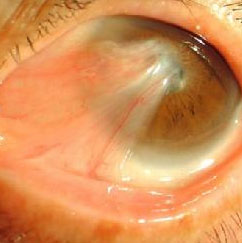

眼角疾病
眼表疾病介绍
眼表的解剖学含义：泛指参与维持眼球表面健康的防护体系中的所有外眼附属器。具有临床意义的眼表：包括结膜、角膜、眼睑、泪器及泪道。银海眼科医院角膜与眼表科是一个集医疗、教学、科研为一体的医疗科室。科室云集了一批经验丰富的角膜病、泪道疾病等眼表专家，充分利用中西医临床技术与资源，避免单纯西医治疗的局限性。同时引进国际高端设备，开展各类角膜手术，泪道手术，结膜及眼睑手术和中医对眼睑痉挛，过敏性结膜炎，干眼症，睑板腺功能障碍，各类角膜炎，巩膜炎等中医辩证治疗。科室秉承“大医精诚”之精神，综合运用最前沿的西医技术及传统中医治疗手段，为广大眼表患者提供专业、优质、健康的诊疗服务。
1、翼状胬肉
常见疾病， 形相似昆t虫翅膀得名，。常见高海拔紫外线，阳光沙尘，干燥气候等刺激。内外眼角都可生长。那怎么治疗呢
1.用抗生素眼药水以控制结膜炎症,减轻充血。在充血较重时可加用皮质类固醇眼药水。为减少外界刺激可戴适当的变色镜。当有炎症刺激时可点左氧氟沙星眼液与0.5%可的松眼药水、夜晚可涂红霉素眼膏。
2.小而静止的翼状胬肉无需治疗，观察。如胬肉为进行性或已接近瞳孔区影响视力或眼球转动受限时则可行手术切除。
3.手术治疗
(1)适应证：①翼状胬肉为进行性、肥厚且充血;②胬肉已侵入近瞳孔区影响视力。3.胬肉虽然小，但是经常发炎，要求手术者。
(2)手术方法：翼状胬肉的手术治疗要求达到3个主要目的：安全地将胬肉切除干净;达到良好的光学效果;避免复发。因此，在选择手术方法时要特别慎重。手术方法主要包括：翼状胬肉头部转移法、单纯切除暴露巩膜法、角膜缘干细胞移植术，后来又发展出
口腔黏膜移植术及羊膜移植术等。术后必须对手术后病人进行定期复查、随访以观察有无复发体征。
(二)预后
手术成功则恢复良好。术后复发原因与术眼条件(如术前炎症消退不彻底，胬肉肥厚，充血明显的进行性胬肉)、操作不当及手术方法，术后用药不及时等因素有关。继续受到危险因素的刺激也是重要因素。
2、角膜病的原因与治理
角膜病为眼科常见病，常见治病原因有细菌，病毒，真菌，结核，棘阿米巴原虫，免疫性疾病，遗传，外伤等，病因复查，治疗棘手。我院角膜病科拥有国际上先进的角膜检测系统，如接触性和非接触性的角膜内皮分析系统，能够早期检测出角膜内皮细胞的异常。同时引进世界上最先进的共焦显微镜，为真菌性角膜炎的早期诊断及其它角膜炎的诊断提供了准确、无创伤的可靠手段。在诊断棘阿米巴角膜溃疡方面更具优势。UBM，前节oct也为屈光角膜手术 PRK 和 LASIK 术后的临床愈合过程提供动态的观察效果。本科还有角膜地形图，角膜测厚等一批先进的角膜检查设备。
主要的发病原因有以下两点：
一、外部原因
1、角膜完整性得到破坏，上皮损伤、脱落。
2、病原体趁虚而入。
只有在这两个条件都具备的情况下，才容易发生感染性角膜溃疡。
二、内因
1、来自全身的内因性疾患。角膜没有血管，所以急性传染病不易侵及角膜。但角膜组织却参与全身的免疫反应，所以抵抗力下降容易感染。但是正因为它没有血管，新陈代谢较为迟缓，才使这种免疫反应变化持续经久，角膜在较长时间内处于一种敏感状态，导致药物难以达到有效浓度，治疗就比较棘手。
2、由邻近组织蔓延所致。由于胚胎学上的同源关系以及解剖学上的连续性，蔓延到角膜上皮层的疾患多来自结膜，如严重的结膜炎多合并浅层角膜炎，病毒性角结膜炎等。但是不论哪一类角膜炎，都应及时治疗，争取最佳治疗时机，将后遗症减少到最低程度。如治疗不当或延误治疗都可以导致永久性视力损失，甚至失明。
3、巩膜炎中医治疗
巩膜炎在中医上叫做火疳症，多认为是肺肝热胜，湿热蕴蒸导致气滞血瘀发病，晚期多阴虚火旺，因此，中医认为要想治疗巩膜炎需要清肺泻肝，清热化湿，活血化瘀，晚期滋阴清热，驱风解毒等，看看中医是怎么治疗巩膜炎的。
1.火毒淤结引起的巩膜炎
火毒淤结引起的巩膜炎，介绍个方子，还阴救苦汤。该汤选用黄芩、黄连、黄柏，龙胆草，川芎，红花生地知母等，加水煎煮，每日一剂，去渣喝汤。对于早期的巩膜炎，可以用这个药方。
如果是湿热引起巩膜炎，气滞血瘀，则可以服用加味三仁汤。杏仁15、半夏10、飞滑石15、生薏苡仁30、白通草6、白蔻仁10、竹叶10、厚朴10 桃仁12 红花10 蒲公英25 单位g。方法同上。
2.肺虚引起的巩膜炎
对于肺虚引起的巩膜炎，中医推荐养阴清肺汤，或加减滋阴地黄汤。特别是有口干、喉咙干燥，或者是有痰的患者，这个汤有清热解毒的作用。药材有生地、党参、贝母、丹皮、白芍、薄荷、生甘草、麦冬。煮水煎服。
不论是那种原因引起巩膜炎，不妨按照以上中医方子试一试。另外，巩膜炎病程长，需要坚持治疗，不可半途而废。